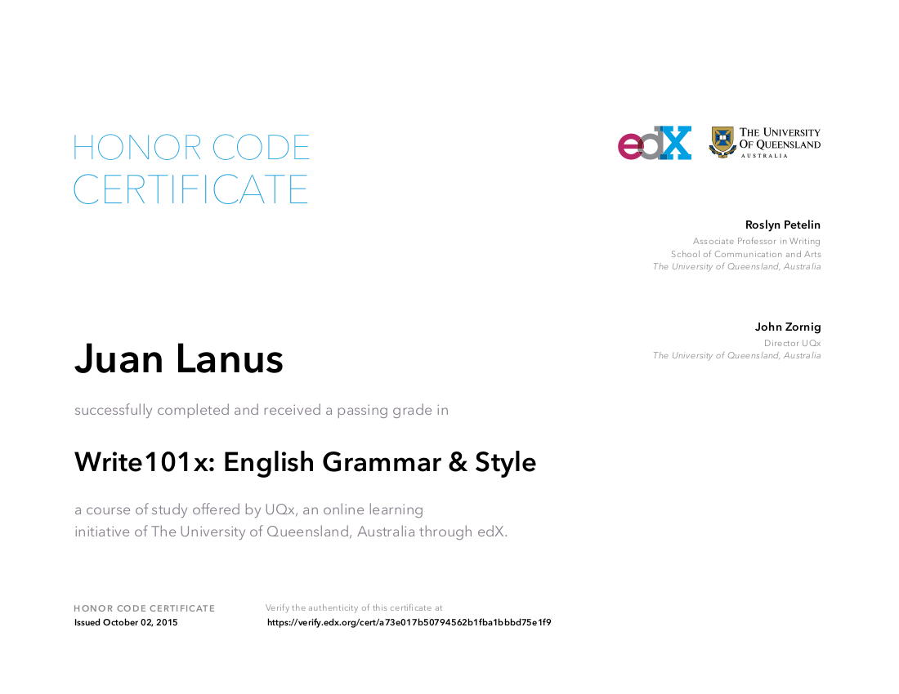
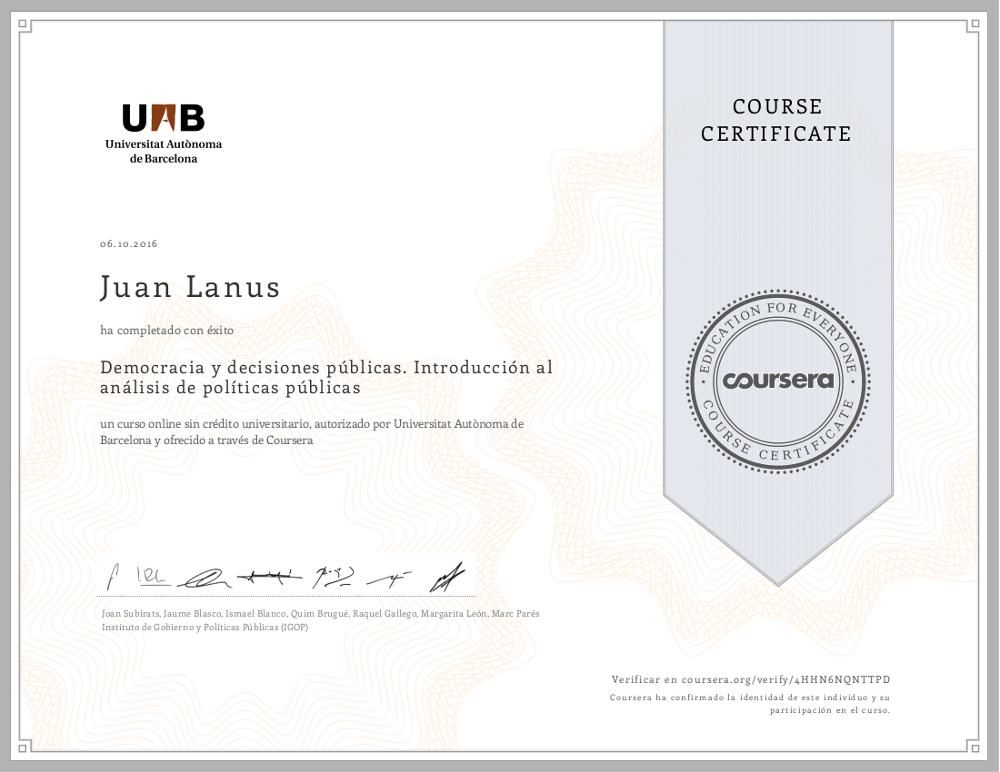

Quick interaction prototypes
Working prototypes created to showcase interactions.- Food selector:
The requirement was to allow the users to select items from a rather lengthy set where the structure of the data was known to be hierarchical.
- List manager:
The use case was about managing a big numbers of columns of a grid, allowing to select and reorder them.
There is also a number of locked columns, that are displayed the first, and thus need to be grouped. - Acrylic sheets color sampler:
This is a small website for an acrylic sheets factory. Its edge is the greater colors offering.
In order to leverage that, the site sports a simple color picker where one can build the palette by clicking on the desired colors. - Contextual help:
A wireframe showcasing a set of recommendations on how to implement contextual help in a portal-like huge application so it's consistent across all pages, also allowing to decouple and reuse the help development effort.
- Food selector:
-
Applications
Applications designed by me. -
Certificates
-
Startup
A course not about any kind of startup, but about internet startups.
Very technical, it involved the development of a crowd funding site.
-
MongoDB
MongoDB is the most representative of the new no-SQL databases.
The course involved several programming assignments requiring to create and use a database mostly through NodeJS servers.
-

English writing
A course on English to hone my skills.
It was quite interesting and I learned a lot about things I was already doing by heart without explicitly knowing the rules.
-

HTML5
A review of all the new HTML features packed in a few weeks course.
HTML is a very basic tool of the trade and, altough many of the new features were around for quite a while, it was good to check them all plus a few that were new to me.
-
Congreso Educativo 2017
Participation in an education congress as listener.
Education became a significant subject when I started thinking of my "Democom" project.
-

Democracia y Políticas Públicas
An excellent course on Democracy and Public Policies by Universitat Autònoma de Barcelona.
Public policies became a significant subject when I started thinking of my "Democom" project.
-

Graded as "Calculista Científico"
Graded with a Scientific Calculist tertiary title in Universidad CAECE.
The syllabus included many Algebra, Mathematics and CS courses.

-